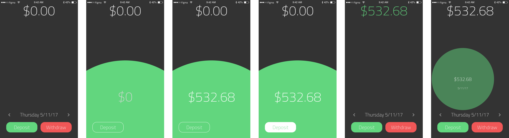
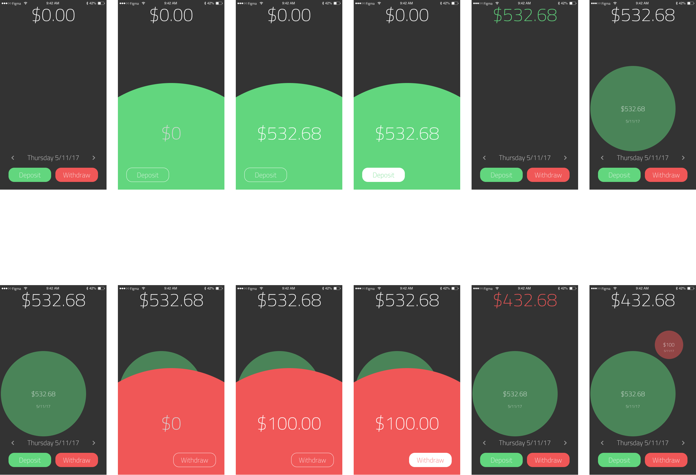
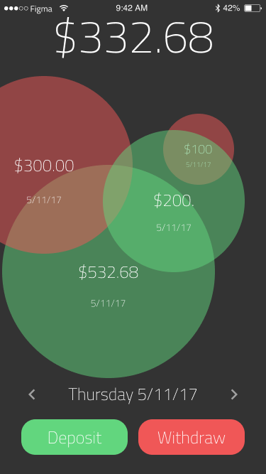
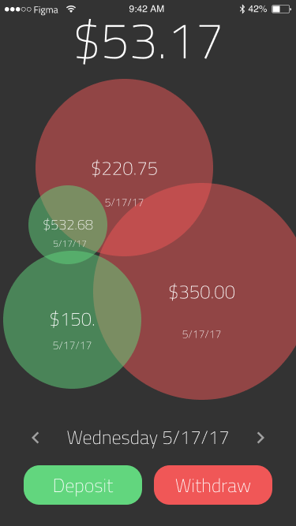
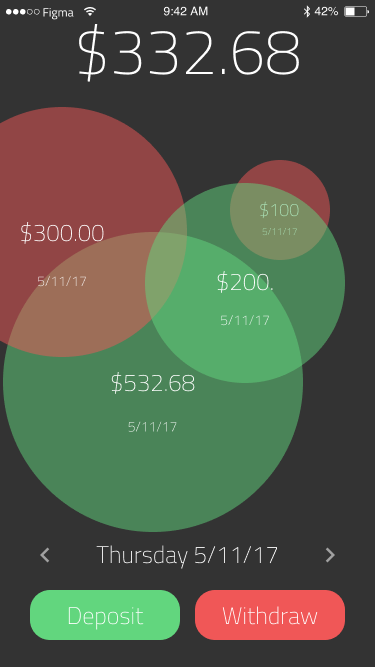
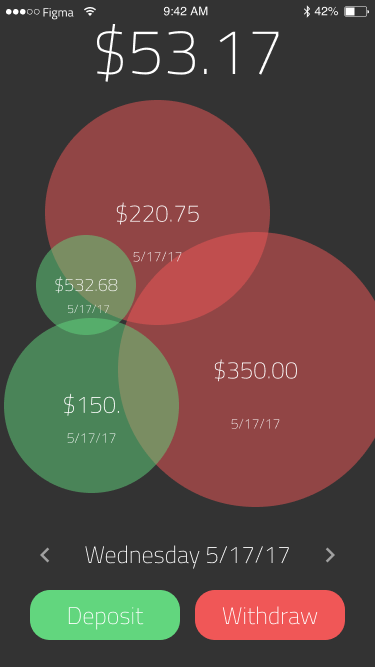

Radius - Mobile UI Project
Radius is a mobile application designed to help you save money. Its focus is to visually represent and provide interaction with your spendings to help increase your awareness of how much is going in and out of your pocket.
The project was designed using Figma, a lightweight prototyping application.
My Idea
I used to be a very stingy spender. I would micromanage my spending to the penny. It went as far as me keeping track of my current balance on my calculator, adding and subtracting after every deposit or purchase. Realizing that the calculator was not used for this purpose (obviously), I decided to create my own version of monetary management.
The Concept
I wanted to stay away from typical line and bar graphs, so I went for a more interactive approach. My main highlight for Radius is that not only is the user's spendings and savings displayed, but the user also has to initialize the visualization. The idea is that a user would input if they saved or spent, and then would follow that up by tapping anywhere on the screen. Upon tap, it would display a green circle if money was earned or red if money was spent. The size of the circle would correlate with the monetary amount.
The UI is kept clean because I wanted the focus to be on the color and size of the circles created. This is so the user will get an overall impression of the screen and see from the commanding color if they have been spending too much or budgeting well.

 



You can see the complete prototype here.
The Goal
Through this design, my goal for Radius is that it will help users become more conscience of their spending habits. The simple, user-initiated visualization would allow for the daily tracking and status of a user's current budget.
From its lightweight model to its efficient flow, Radius is a tool that a user can interact with and use in a few seconds. It is in those few seconds that will influence what is purchased next.